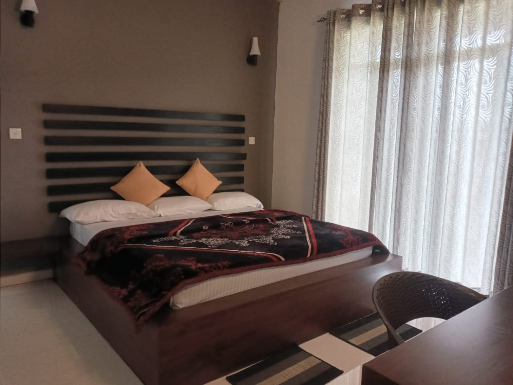
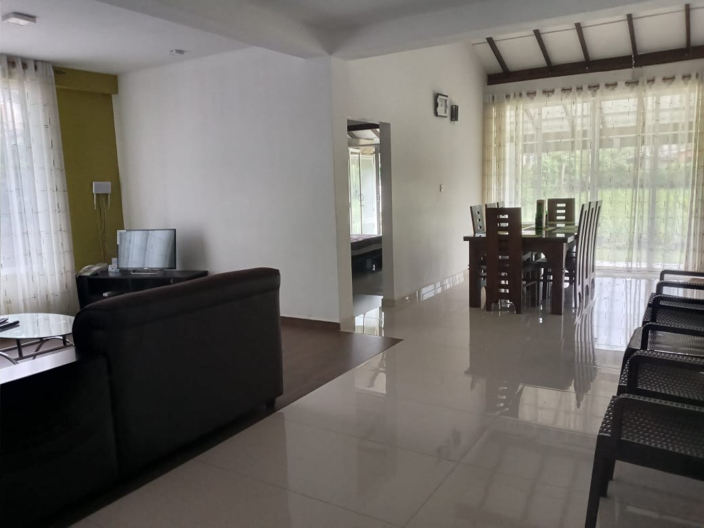
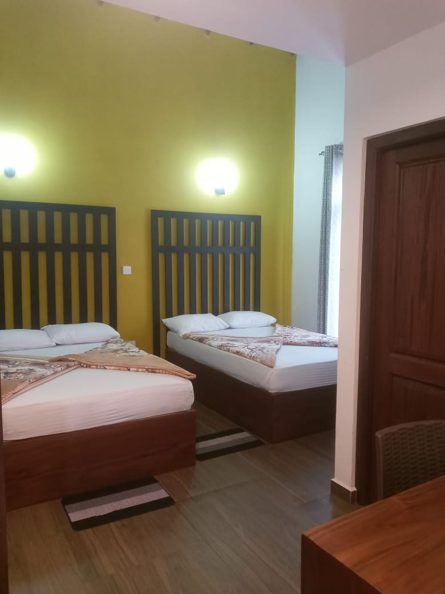
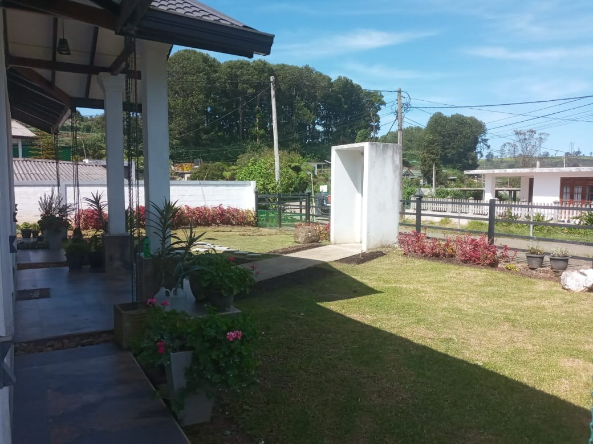
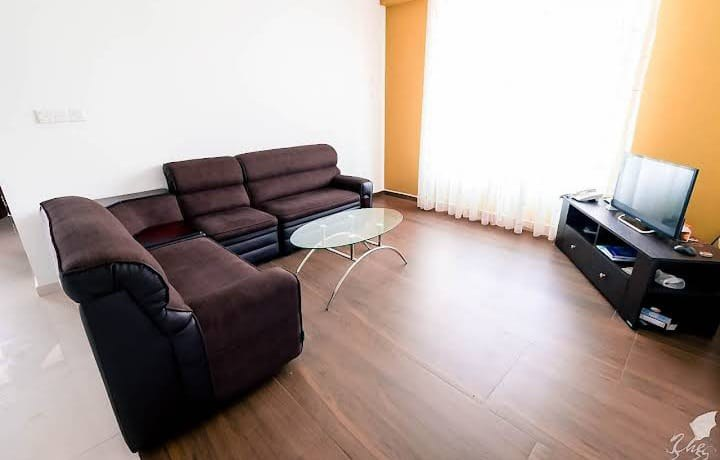
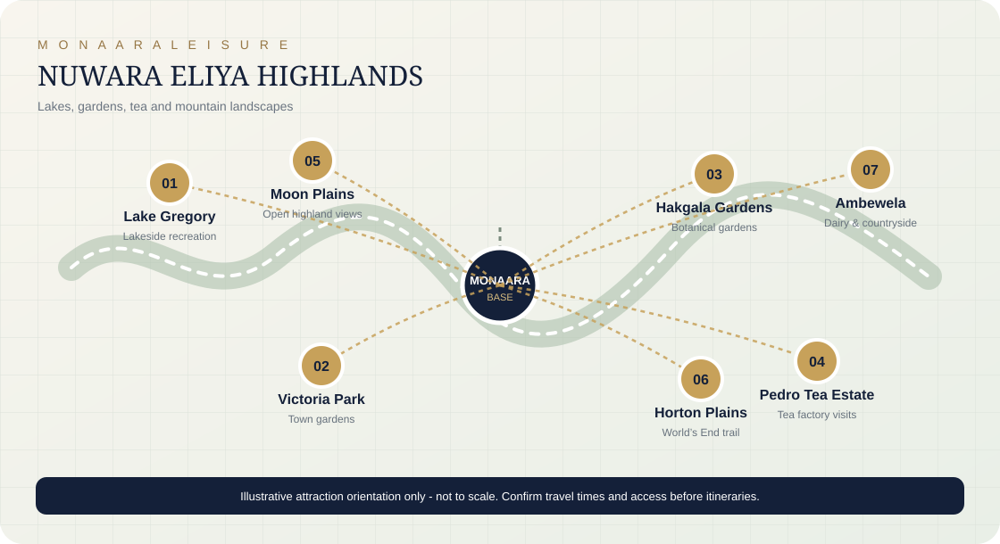

★★★★★ 5/5 · Google
“His warm hospitality, helpful nature, and excellent knowledge of the surrounding area” made the visit memorable.Ajani ShamilkaHighlighted hospitality and local knowledge.
A relaxed, cool-climate base for exploring Nuwara Eliya and Sri Lanka’s central highlands. With four rooms, seven double beds and capacity for up to 15 guests, the property can suit families and small groups travelling together.
Monaara Leisure Nuwara Eliya gives guests a welcoming place to return to after exploring tea country, gardens, lakeside walks and highland viewpoints. The property includes bedrooms with different sleeping arrangements, shared indoor space and an outdoor garden area.
For travel partners, the property offers four rooms, seven double beds and accommodation for up to 15 guests. The mix can be discussed with the team to suit couples, families and small groups.







A look at welcoming indoor spaces, garden-side areas and the surrounding cool-climate highlands.
Practical comforts for guests returning from a day out in the cool central highlands. Meals are available; meal choices and arrangements should be discussed with the property when confirming a booking.
The current travel-agent rate card provides Room Only and Bed & Breakfast rates. All prices are in Sri Lankan rupees (LKR).
| Room type | Room only (R/O) | Bed & breakfast (B/B) | Occupancy in rate card |
|---|---|---|---|
| Double | LKR 12,000 | LKR 16,000 | 2 pax |
| Triple | LKR 14,000 | LKR 20,000 | 3 pax |
| Family | LKR 18,000 | LKR 26,000 | 4 pax |
Check-in: 14:00 · Check-out: 10:00. The supplied rate card states that full payment is due two weeks before guest arrival. Confirm payment arrangements and any agreed amendments in writing.
These destination highlights can help agents shape a Nuwara Eliya itinerary. Travel times and access depend on weather, road conditions and the guests’ schedule.

Lakeside walks, views and seasonal recreational activities.
Open map ↗A town-centre garden stop for a gentle walk.
Open map ↗A well-known highland garden with varied plant collections.
Open map ↗A tea-country visit to learn more about Sri Lanka’s tea industry.
Open map ↗A major nature outing requiring an early start and weather-aware planning.
Open map ↗A highland landscape and viewpoint excursion.
Open map ↗Open countryside and agricultural landscapes to the east of town.
Open map ↗Colonial-era architecture, parks, cafés and local shopping.
Open map ↗


“His warm hospitality, helpful nature, and excellent knowledge of the surrounding area” made the visit memorable.Ajani ShamilkaHighlighted hospitality and local knowledge.
“The room was very clean and comfortable. The customer service was excellent, and the staff were very friendly and helpful.”Mohamed AshifHighlighted room comfort and service.
“Nice, calm, clean place in Nuwara Eliya.” The reviewer also praised the housekeeper’s care.Happy Tours SrilankaHighlighted a calm stay and helpful hosting.
Contact Monaara Leisure to check dates, confirm room allocation, discuss meal arrangements and finalize travel-agent rates.
Request availability & ratesTravel trade partners